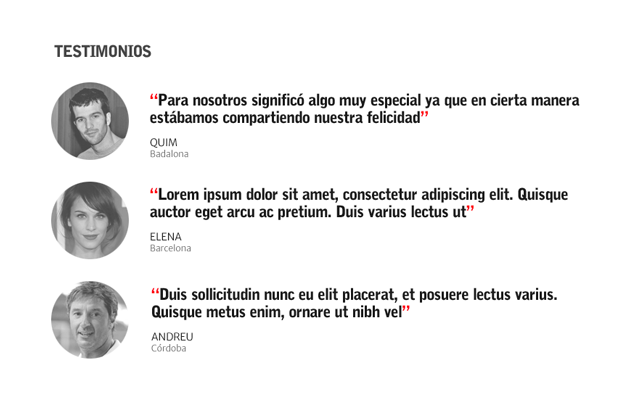
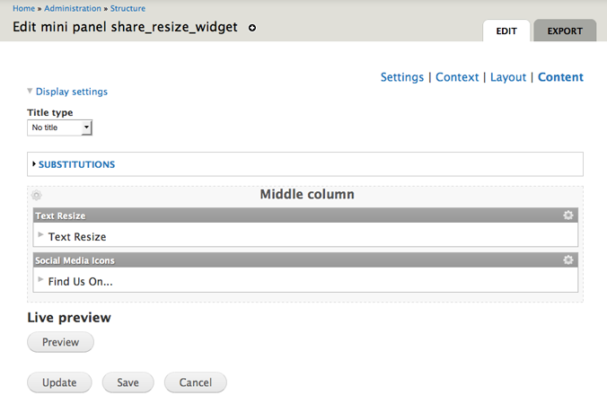

Component Driven
Design and Development
Cristina Chumillas
Designer and frontend developer at Ymbra
What are we going to talk about
- Components
- Design Systems
- CSS Methodologies
- Styles Guides
- In Drupal
Web projects
| vs |
|
Components
|
Use components
to Make systems modular
For a system to be modular, it must have interchangeable parts.
What makes a component modular?
- Standard & shared design
- Centralized code
- Controlled via system, not the user
- Customizable options
|  |
“We’re not designing pages, we’re designing systems of components.”
--Stephen Hay
Design systems
Everything that makes up your product.
--Mark Otto, FOWA 2013
Everything.
Typography, layouts and grids, colors, icons, components, coding conventions...
Why Design Systems?
Reusable work - COMPONENTS
More efficient projects
Large-scale ready code
Everybody knows how everything works
Integrates multi-disciplinary workflow
Atomic design
Brad Frost

When?
Wireframes
Static wireframes vs HTML Wireframes
Static wireframes
- They are abstractions
- They are full of assumptions
- They are never complete
HTML Wireframes
- They get into the browser quicker
- They reinforce the notion that you’re creating a website
- They are interactive
- They allow annotations
- They are the base for the final product
Design
Static delirables vs HTML delirables-prototypes
Designing in the browser
- PSD for early planning/research phases
- The composition in the browser
- Make decisions in the browser
- Reusable work > Developer will know how do you want you output
CSS Methodologies
OOCSS
(Object Oriented CSS)Based in Object Oriented programming paradigm:
- Do One Thing Well
- Single Responsibility Principle
(1 responsability = 1 class) - Focuses on Separation of Concerns(SoC)
OOCSS
(Object Oriented CSS)
/* Media Object */
.media {}
.media .image {}
.media .comment {}
BEM
(Block Element Modifier)
.site-search {} /* Block */
.site-search__field {} /* Element */
.site-search--full {} /* Modifier */
BEM
<div class="block-name__wrapper">
<div class="block-name">
<h2 class="block-name__title">Block title</h2>
<p class="block-name__text">Block text</p>
</div>
</div>
SMACSS
Style Guides
Documentation of a Design System
Why?
- Improve User Experience
- Easy onboarding of new team members
- Efficient Design and Development
- Makes Testing easier
Styleguide Driven Development(SDD)
Style guides that are generated directly from the style definition sources
KSS (Knyle Style Sheets)
- Documentation specification and styleguide format.
- Structured to be automatically extracted and processed.
base/layout/components/pager/_pager.scss_pager.hbs
_pager.scss
// Pager
//
// Markup: pager.hbs
//
// Style guide: components.navigation.pager
.pager,
%pager {
margin: 0;
// All the styles here.
}
_pager.hbs
// Pager
<ul class="pager {{modifier_class}}">
<li class="pager__item">
<a title="Go to page 1" href="/admin/content">1</a>
</li>
<li class="pager__item">
<a title="Go to page 2" href="/admin/content?page=1">2</a>
</li>
<li class="pager__current-item">3</li>
<li class="pager__item">
<a title="Go to page 4" href="/admin/content?page=3">4</a>
</li>
<li class="pager__item">
<a title="Go to page 5" href="/admin/content?page=4">5</a>
</li>
</ul>
Style Guides - resources
Articles, Books, Podcasts, Talks, Tools, Examples, etc.
In Drupal
General approaches
- Wrapping components
- Changing default markup
Our components to Drupal components
- In code
- Display Suite
- Panels
In code
- Field formatter
- Process and preprocess functions
hook_(...)_alter- hook_page_alter()
- hook_form_alter()
- hook_node_view_alter()
- (...)
- ...
Display Suite
View modes
Display Suite
Field templates (Display Suite extras)
Panels
- Custom Panes
- Templates for pane
- Add class to the pane
- Mini Panels
- Context
Panels
Custom Panes (CTools Content Type or Plugin)<?php
$plugin = array(
'single' => TRUE,
'title' => t('Menu shortcuts to the themes'),
'category' => t('MSF ES: Themes'),
'render callback' => 'jumpmenu_themes_render',
'admin info' => 'jumpmenu_themes_admin_info',
);
/**
* The 'admin info' callback for panel pane.
*/
function jumpmenu_themes_admin_info($subtype, $conf, $contexts) {
(...)
}
/**
* Render callback function.
*/
function jumpmenu_themes_render($subtype, $conf, $args, $contexts) {
(...)
}
Panels
Custom template for pane
/**
* Implements hook_preprocess_panels_pane().
*/
function mymodule_preprocess_panels_pane(&$variables) {
switch ($variables['pane']->subtype) {
case 'my-pane-name':
$variables['template_files'][] = 'panels-pane-test';
break;
}
}
Panels
Custom class
/**
* Implements hook_preprocess_panels_pane().
*/
function mymodule_preprocess_panels_pane(&$variables) {
switch ($variables['pane']->subtype) {
case 'my-pane-name':
$classes = 'my-custum-class';
$variables['classes_array'][] = $classes;
break;
}
}
Panels
Mini-panels
Panels
Context
Thanks!
| Drupal-generated markup is not your friend -- use a styleguide! Robert Caracaus Tuesday 22 14:15-15:15 Room 112 |
Prototypes and Drupal: from designing in-browser to implementing custom templates Yuriy Gerasimov and Morten Christoffersen Wednesday 23 10:45-11:45 Room 111 |